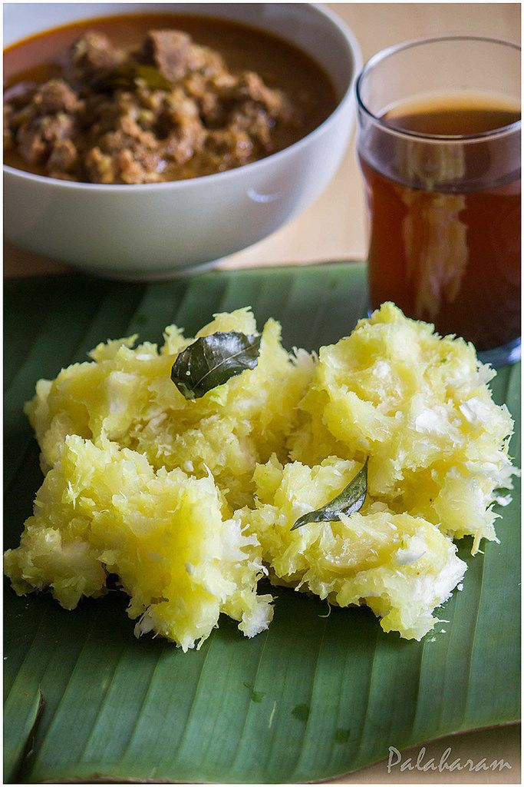

Kappa

A healthy and delicious Tapioca (sabudana) recipe to cook at home! Boiled tapiocas are cooked in a ground paste
of coconut and spices, tempered with sauteed onions, red cillies, mustard seeds and curry leaves.
Ingredients
- 2 Tapioca (cubed)
- Little Salt
- 1 Coconut
- 1 Cumin seeds
- 1-2 Green chilli
Steps
- Peel off the skin from the tapiocas, cut into cubes, wash under running water.
- Boil the tapiocas along with water and little salt until it turns tender and well cooked.
- In a large saucepan, add the cooked tapiocas and the ground paste.
- Cook for about 5-10 minutes, until the gravy starts to thicken and is combined well.
- Heat a small pan over medium heat, add oil.
- Add the chopped small onions and saute for a few minutes.
- Add dry red chilies and curry leaves, saute till onions have turned brown.
- Pour this tempering onto the cooked tapioca.
- Keep the tapioca covered for sometime so that the flavors from the tempering will get into the dish.
Main page